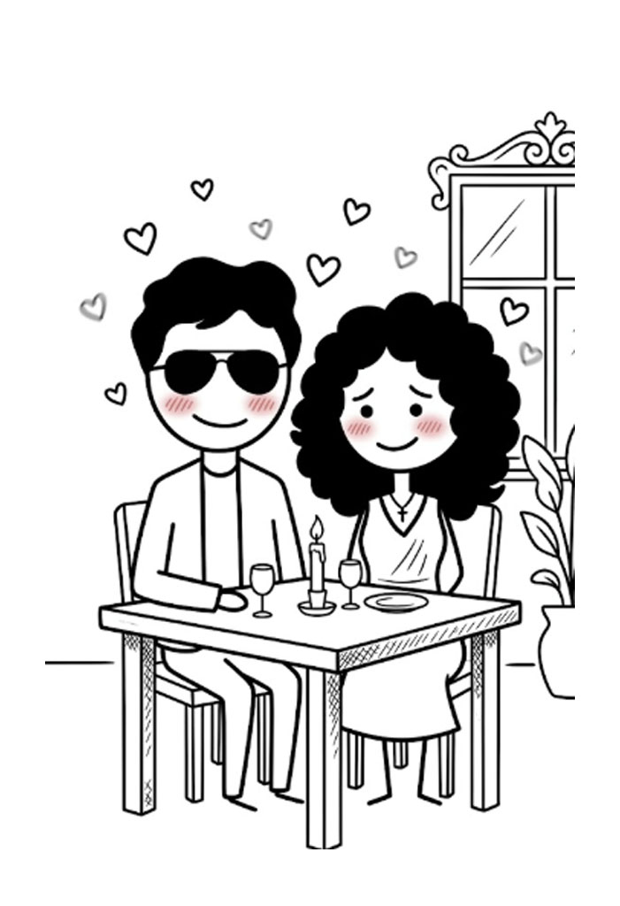
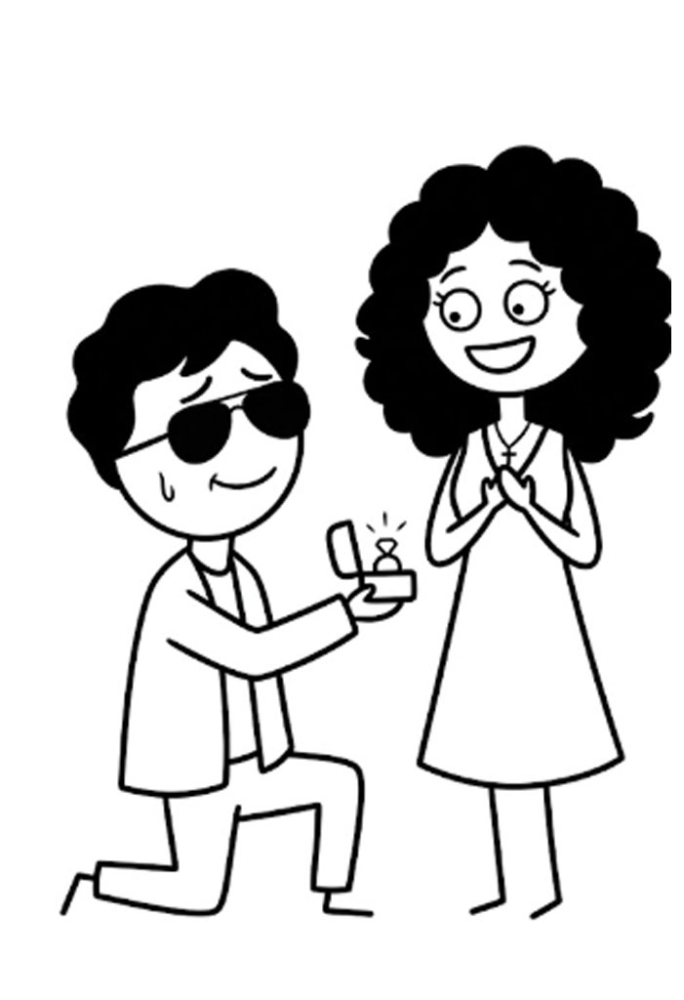
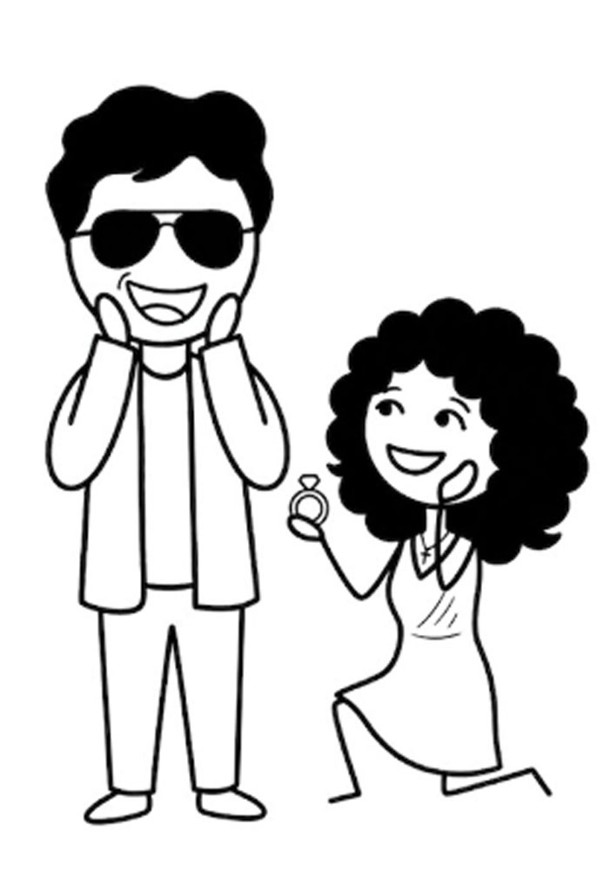
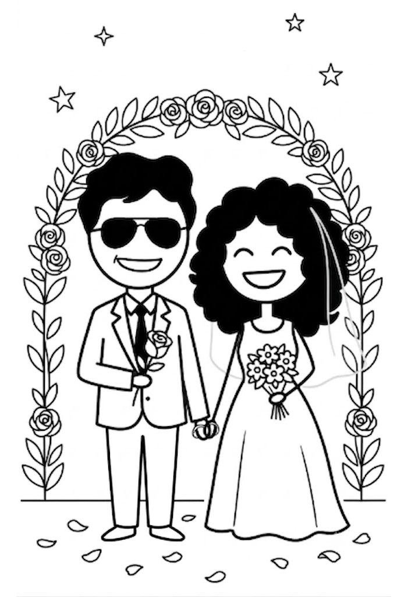
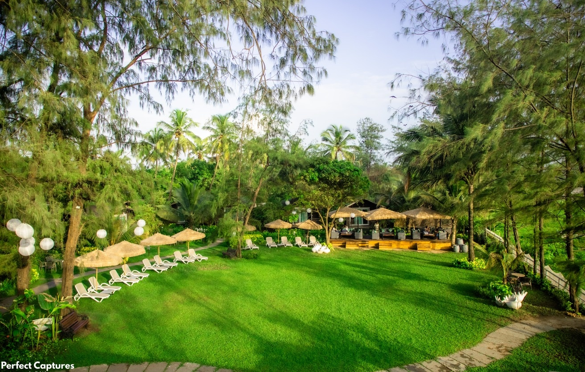
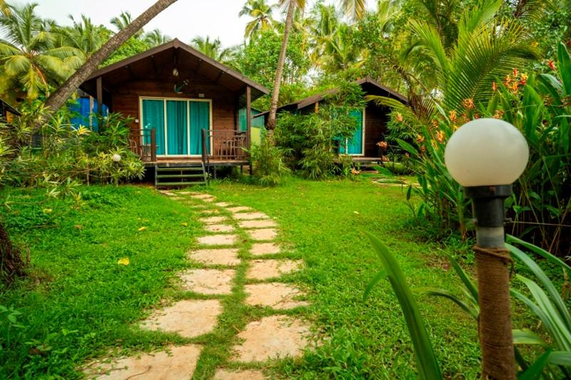
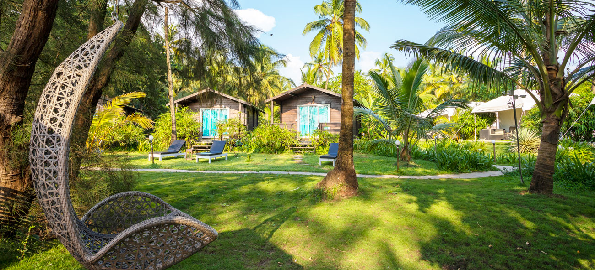
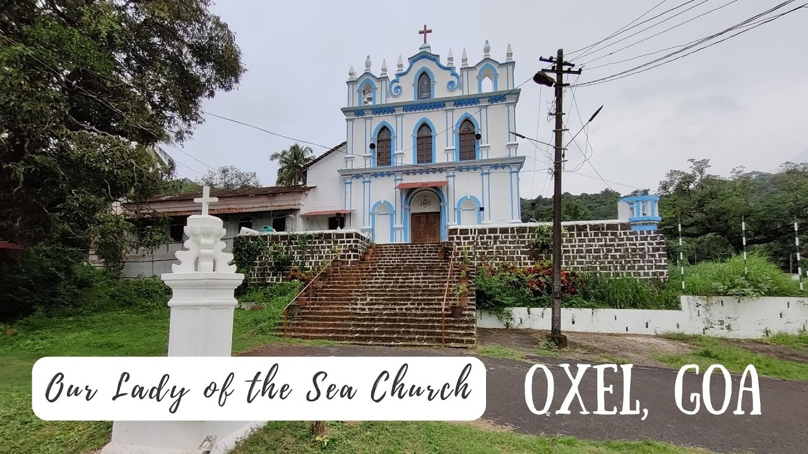
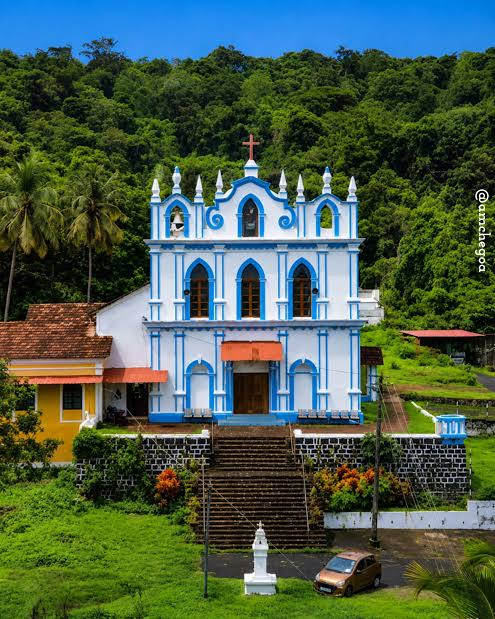

The blind date
We first met on a blind date, introduced and firmly forced into it by our mutual best friend Rebecca. She offered a movie, shopping, church, or dinner. We played it safe with a simple dinner, and immediately hit it off.


Shannon Earl Pereira & Gloria NoronhaGloria Noronha & Shannon Earl Pereira
I have found the one whom my soul loves Song of Solomon 3:4
Together with our parents Eric & Severine Pereira Ambrose & Rita Noronha And our siblings Elisha Pereira Clifton Noronha
A letter from us to you
Gloria and I met in the most unexpected way: on a blind date our mutual best friend Rebecca forced us into, because she had already decided we were perfect for each other and was not taking questions. If it hadn't been a blind date, Gloria might have second-guessed the whole thing. Rebecca does not do second guesses. Apparently that was the best decision Gloria has ever made, because Shannon is cool, handsome, and so much fun. Gloria actually said that. This is not Shannon typing it. He checked.
Even though Gloria is usually the shy one and takes a looong time to warm up to anyone, she jumped right into the driver's seat. She led the entire conversation, while Shannon was busy blushing the whole time. We immediately hit it off.
Over time, our relationship just kept getting stronger, deeper, and childishly pure, until we became inseparable. Shannon found someone who would actually laugh at all his awesome lame jokes, and Gloria found someone she could be her truest, most goofy self with.
And now, we are super excited to finally begin our next chapter: two overgrown kids becoming husband and wife.
This is more than just a celebration for us. We want this day to be truly intimate, surrounded only by the people we deeply love, celebrating in a place we truly love as well. We cannot wait to share our special day with you. You have been a part of our journey in one way or another, and we would love for you to witness our lives becoming one. Your presence means the world to us, and we are so excited to make some awesome memories with you!
A few of the days that brought us from that first date to here.

We first met on a blind date, introduced and firmly forced into it by our mutual best friend Rebecca. She offered a movie, shopping, church, or dinner. We played it safe with a simple dinner, and immediately hit it off.
After countless calls, meetups, and long conversations, we made it official on 4 May 2023. Star Wars is only the second-best thing that happens on that day.

Shannon proposed to Gloria in Munnar, Kerala, on 7 January 2026, under a sky full of stars in a remote, beautiful spot. He forgot to film it, but he does have audio of Gloria crying. Ask him nicely if you want to hear it.

On 8 February 2026, Gloria proposed to Shannon too, and gave him a ring. Shannon's had the stars. Gloria's was sweeter and cuter. The score is 1-1.
We got civil married on 24 April 2026. So yes, we are already legally married. We do not count it. Most days we are still boyfriend and girlfriend. On a good day, fiancé and fiancée.

19 December 2026. Soon. This is the one that actually counts.
Can you make it?
our highly unofficial wedding figures
figure 1.1
figure 1.2
you're ready to swap ordinary December for a Goa beach holiday
you love wedding cake and delicious Goan food
you'll have FOMO if you only see the pictures on social media
you're not doing anything else more interesting on 18 & 19 December
you're not doing anything else more interesting on 19 December
Vithaldas Waddo, Morjim, Pernem, Goa 403512
On Morjim Beach, North Goa



Montego Bay Beach Village, Morjim
Oxel, Siolim, Bardez, Goa 403517
Nuptial Mass, 19 December


Our Lady of the Sea Church, Oxel
18 December 2026 — Roce Ceremony
19 December 2026 — Wedding
General Wedding Details
When and where is the wedding?
The Roce Ceremony is on 18 December 2026 at Montego Bay Beach Village, Morjim. On 19 December, the Nuptial Mass is at 4:00 PM at Our Lady of the Sea Church, Oxel, and the reception follows that evening at Montego Bay Beach Village, Vithaldas Waddo, Morjim, North Goa, 403512.
The Nuptial Mass is on 19 December 2026 at 4:00 PM at Our Lady of the Sea Church, Oxel. The reception is the same evening at Montego Bay Beach Village, Vithaldas Waddo, Morjim, North Goa, 403512.
Do I need to attend both days?
Not at all! You are welcome to attend one or both events. Please indicate your preference on your RSVP form so we can plan accordingly.
What is the dress code?
Indo-Western fusion for the Roce. In plain terms, Indian festive wear that went on a date with a Western outfit and neither of them went home: a kurta with trousers, a modern saree, or anything that looks ready for a wedding and a party at the same time. Formals for the Reception. Please avoid all-white outfits out of courtesy to the bride.
Formals for the Reception. Please avoid all-white outfits out of courtesy to the bride.
Are children welcome?
Yes, absolutely! We love your little ones and welcome children at both events. Please do let us know on the RSVP if you are bringing children so we can ensure appropriate seating.
Yes, absolutely! We love your little ones and welcome children at the Reception. Please do let us know on the RSVP if you are bringing children so we can ensure appropriate seating.
What is the RSVP deadline?
We kindly ask that you RSVP by 30 November 2026 so we can finalise catering and seating arrangements.
Will there be a shuttle or transport service?
A shuttle runs from Montego Bay Beach Village to Our Lady of the Sea Church and back, on the reception day only.
Food & Drinks
Will meals be provided?
Yes, lunch and dinner will be provided on both days.
Will there be vegetarian options?
Yes, both the Roce dinner and the Reception will have a full vegetarian menu alongside non-vegetarian options.
Yes, the Reception will have a full vegetarian menu alongside non-vegetarian options.
Is there an open bar?
Yes! An open bar with a selection of wine, beer, and soft drinks will be available throughout both evenings. We encourage you to celebrate responsibly and arrange a safe ride.
Yes! An open bar with a selection of wine, beer, and soft drinks will be available throughout the evening. We encourage you to celebrate responsibly and arrange a safe ride.
What cuisine will be served?
Primarily Goan and Indian cuisine, on both days.
Primarily Goan and Indian cuisine.